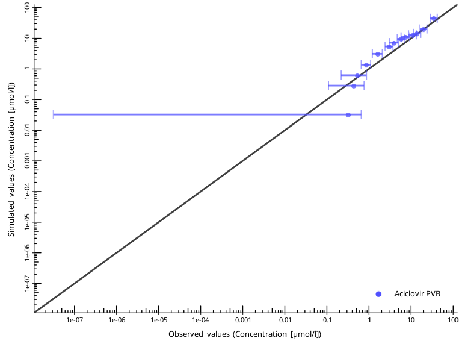
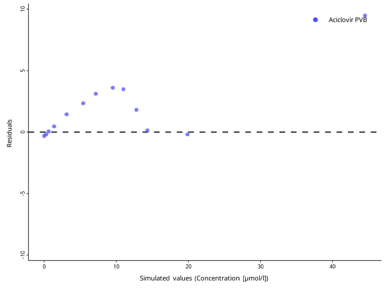
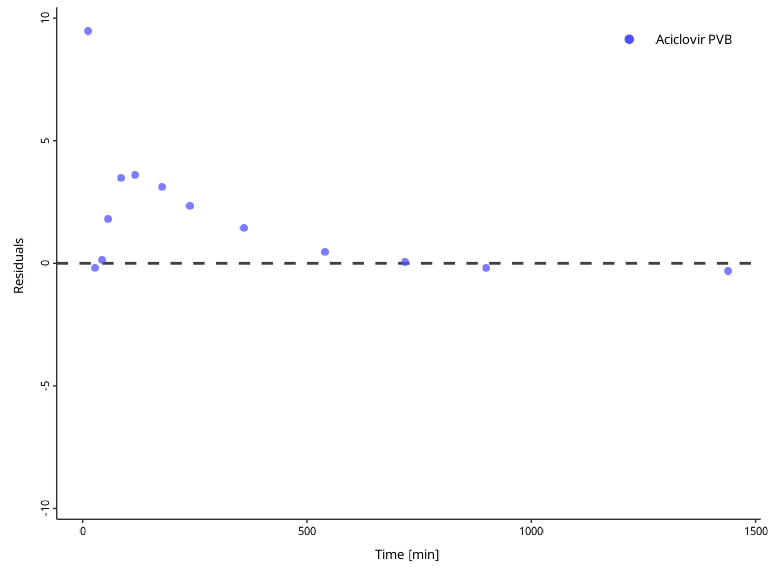
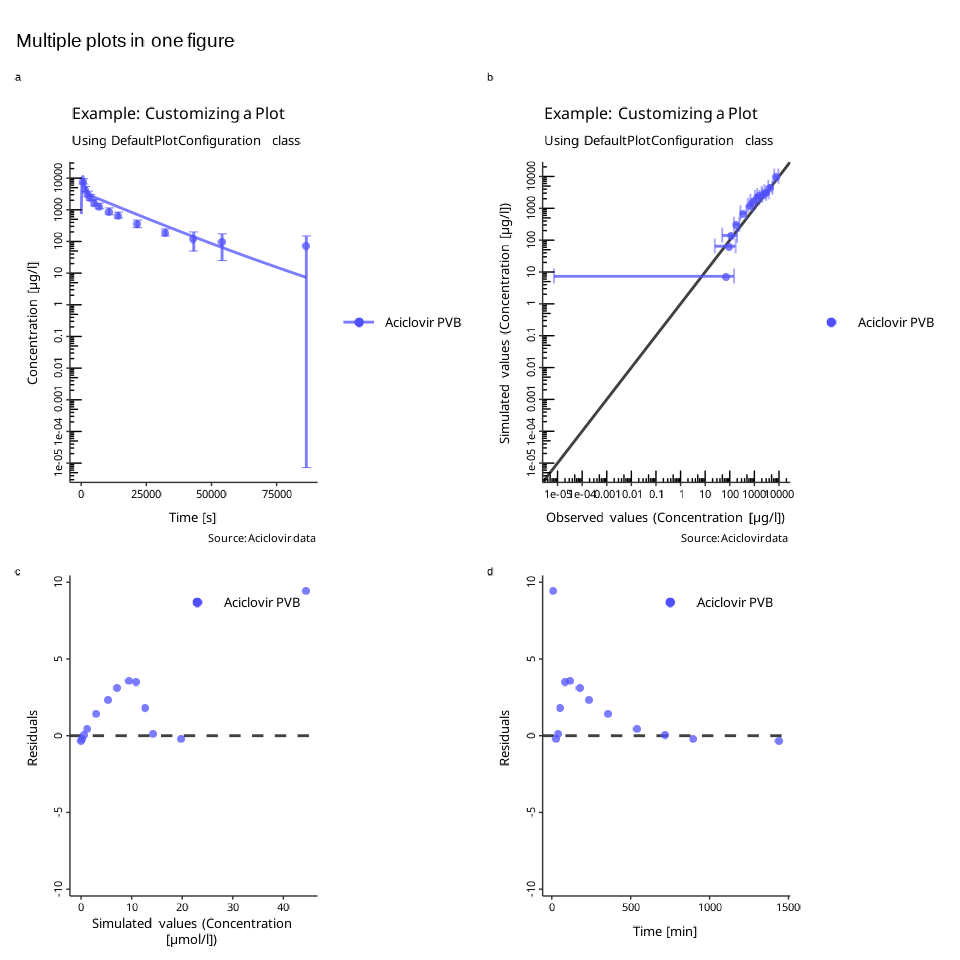

Visualizations with `DataCombined`
Source:vignettes/data-combined-plotting.Rmd
data-combined-plotting.RmdIntroduction
You have already seen how the DataCombined class can be
utilized to store observed and/or simulated data (if not, read Working with DataCombined
class).
Let’s first create a DataCombined object, which we will
use to demonstrate different visualizations available.
library(ospsuite)
# simulated data
simFilePath <- system.file("extdata", "Aciclovir.pkml", package = "ospsuite")
sim <- loadSimulation(simFilePath)
simResults <- runSimulations(sim)[[1]]
outputPath <- "Organism|PeripheralVenousBlood|Aciclovir|Plasma (Peripheral Venous Blood)"
# observed data
obsData <- lapply(
c("ObsDataAciclovir_1.pkml", "ObsDataAciclovir_2.pkml", "ObsDataAciclovir_3.pkml"),
function(x) loadDataSetFromPKML(system.file("extdata", x, package = "ospsuite"))
)
names(obsData) <- lapply(obsData, function(x) x$name)
myDataCombined <- DataCombined$new()
myDataCombined$addSimulationResults(
simulationResults = simResults,
quantitiesOrPaths = outputPath,
groups = "Aciclovir PVB"
)
myDataCombined$addDataSets(
obsData$`Vergin 1995.Iv`,
groups = "Aciclovir PVB"
)Time profile plots
Time profile plots visualize measured or simulated values against time and help assess if the observed data (represented by symbols and error bars) match the simulated data (represented by lines).
plotIndividualTimeProfile(myDataCombined)
Observed versus simulated scatter plot
Observed versus simulated plots allow to assess how far simulated results are from observed values.
plotObservedVsSimulated(myDataCombined)
The identity line represents perfect correspondence of simulated
values with the observed ones. By default, a “two-fold” range is marked
by the dashed lines. The “x-fold” range is defined as values that are
x-fold higher and 1/x-fold lower than the
observed ones. The user can specify multiple ranges by the
foldDistance argument.
plotObservedVsSimulated(myDataCombined, foldDistance = c(1.3, 2))
Residuals versus time or vs simulated scatter plot
Residual plots show if there is a systematic bias in simulated values either in high-concentration or low-concentration regions, or, alternatively, in early or late time periods.
plotResidualsVsSimulated(myDataCombined)
plotResidualsVsTime(myDataCombined)
Residuals of log values can be visualized with the
scaling argument.
plotResidualsVsTime(myDataCombined, scaling = "log")
Customizing plots
The look and feel for plots can be customized using the
DefaultPlotConfiguration class, which provides various
class members that can be used to modify the appearance of the
plot.
myPlotConfiguration <- DefaultPlotConfiguration$new()
# Define x units
myPlotConfiguration$xUnit <- ospUnits$Time$s
# Define y units
myPlotConfiguration$yUnit <- ospUnits$`Concentration [mass]`$`µg/l`
# Change y axis scaling to logarithmic
myPlotConfiguration$yAxisScale <- tlf::Scaling$log
myPlotConfiguration$title <- "Example: Customizing a Plot"
myPlotConfiguration$subtitle <- "Using DefaultPlotConfiguration class"
myPlotConfiguration$caption <- "Source: Aciclovir data"
myPlotConfiguration$legendPosition <- tlf::LegendPositions$outsideRightThis configuration class can be passed to all plotting functions:
plotIndividualTimeProfile(myDataCombined, myPlotConfiguration)
Creating multi-panel plots
Each of the plotXXX() returns a ggplot2
object. Lets create different plots from the same
DataCombined and store them as variables.
indivProfile <- plotIndividualTimeProfile(myDataCombined, myPlotConfiguration)
obsVsSim <- plotObservedVsSimulated(myDataCombined, myPlotConfiguration)
resVsSim <- plotResidualsVsSimulated(myDataCombined)
resVsTime <- plotResidualsVsTime(myDataCombined)These plots can be combined into a multi-panel figure using the
PlotGridConfiguration and then used with
plotGrid() function to create a figure.
plotGridConfiguration <- PlotGridConfiguration$new()
plotGridConfiguration$tagLevels <- "a"
plotGridConfiguration$title <- "Multiple plots in one figure"
plotGridConfiguration$addPlots(plots = list(indivProfile, obsVsSim, resVsSim, resVsTime))
plotGrid(plotGridConfiguration)
The function will try to arrange the panels such that the number of
rows equals to the number of colums. You can also specify the number of
rows or columns through the PlotGridConfiguration:
plotGridConfiguration$nColumns <- 1
plotGrid(plotGridConfiguration)
Check out the documentation of the PlotGridConfiguration
class for the list of supported properties.
Saving plots
All plotting functions return ggplot objects that can be
further modified.
To save a plot to a file, use the ExportConfiguration
object. You can edit various properties of the export, including the
resolution, file format, or file name.
# Create new export configuration
exportConfiguration <- tlf::ExportConfiguration$new()
# Define the path to the folder where the file will be stored
exportConfiguration$path <- "../OutputFigures"
# Define the name of the file
exportConfiguration$name <- "MultiPanelPlot"
# Resolution
exportConfiguration$dpi <- 600
# Store the plot into a variable and export it to a file
plotObject <- plotIndividualTimeProfile(myDataCombined)
exportConfiguration$savePlot(plotObject)